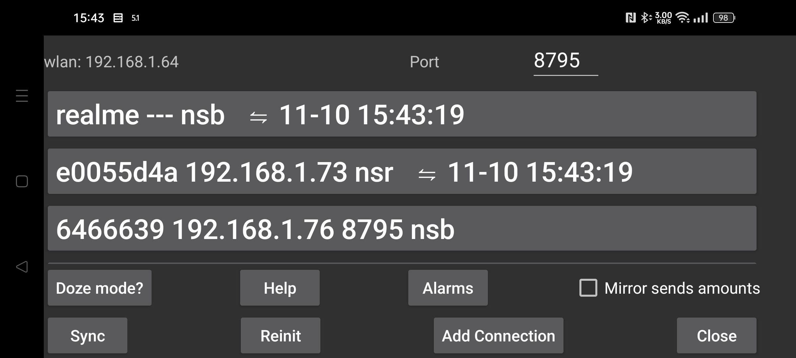

Send data to or receive data from another device. You can connect to an android device running Juggluco to display data the same way as here. After receiving the scan data, the mirror device can also connect to the sensor via Bluetooth. To make sure that only one of the devices contacts with the sensor, "left menu->Sensor->Use Bluetooth" is turned off automatically when Stream values arrive via IP/TCP.
On this screen, after "WLAN", you'll see the local Wi-Fi IP of this device. Enter this on the other device on your home network you're connecting to (or your modem, if you're connecting remotely).
After Port, you can change the TCP port this app is listening on for connections.
By clicking Add connection you can specify with which hosts to connect and how to connect.
On Android, reliable network connections are disrupted by all kinds of battery optimisations and background restrictions, pressing Doze mode helps you change that.
Mirror sends amounts: If this app receives medication, food and activity amounts from Juggluco running on another device, you shouldn't add or modify amounts here. Checking this option makes it impossible to do so.
Sync sends new data to a connected device if available or asks for new data.
Reinit: Closes existing and creates a new connection.
Auto QR: generates a connection to send all data from this phone to Juggluco on another. The other phone needs to scan the QR code with left menu → Photo.
Wifi (only on WearOS): When not set WIFI is turned off automatically after some time by WearOS to preserve battery life and Juggluco switches to the use of Bluetooth for the connection between phone and watch. When it is turned on, WearOS is asked to keep WIFI on and it will take longer before it is turned off, but that can still happen. Setting this option is normally not needed and the makers of WearOS think that turning WIFI on will lead to large increases in battery usage.
Existing connections are shown in a list, the label, the IP port and month, day and time of the last successful sync are shown.
How the connection is used is abbreviated as follows:
n: amounts (numbers)
s: scans
b: stream (bluetooth)
r: receive
For more information on Mirror connections read the help under "Add connection" and see https://www.juggluco.nl/Juggluco/index.html#mirror
You can run the Android Juggluco app on a Windows, Macintosh or Linux computer with the help of an Android Emulator (for example Genymotion). If you use Linux (for example Ubuntu under MS Windows), you can also use Waydroid. The Juggluco on the emulator receives the data via a Mirror connection from an Android phone connected to the sensor. Under the android Studio Android emulator and Genymotion, Pinch movements (moving two fingers to or from each other) can be simulated by pressing the Control key while moving the mouse pointer. Waydroid doesn't support this, but Juggluco does implement it for itself alone.